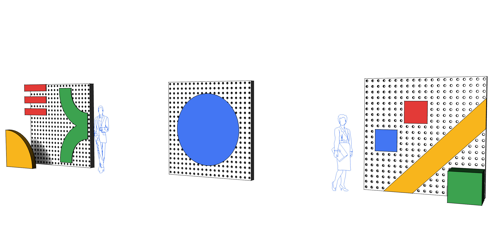

Brand Experiences
Google Cloud Next, San Francisco 2018
Agency: Jack Morton Worldwide
My Role: 3D Environmental Design Intern
Group CD: Julian King
ACD: Amanda Yuan and Lee Schellenberger
Co Design Intern: Cameron Smith


Google reached out to Jack Morton to create two parties, one for Women in Tech and the other for Diversity and Inclusion in Tech. We created two parties in the same room that transformed while the first party was taking place. Some of the fun activations included a build your own pretzel station, a donut wall, a postcard writing station, and an unconventional wine tasting.
My role was to create mood boards and 3D mockups of the interior decor which included small wall pieces to fit the theme. The goal was to tone down the regality of this very ornate room located in the Palace Hotel and turn up the googlyness!